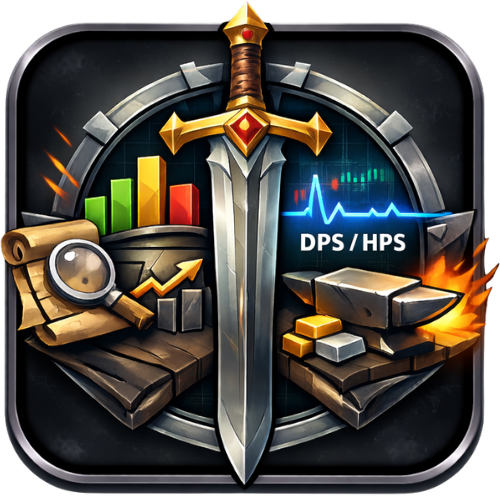

Start dashboard
One place to verify capture runtime, Git, game data, and update status before touching Scanner or Market.
Albion Online Companion App
Albion Command Desk is a passive Albion Online desktop companion. It combines a live/replay combat meter, scanner and runtime checks, and a market workspace for recipe planning, shopping, and profitability review.

One place to verify capture runtime, Git, game data, and update status before touching Scanner or Market.
Live and replay scoreboard with battle, zone, and manual modes plus history, session gains, and party-aware filtering.
Repository sync, update checks, runtime diagnostics, and logs in one place, with clearer guards around scanner/process actions.
Recipe setup, inputs/outputs/results, shopping workflow, journal handling, and profitability snapshots tuned for real crafting decisions.
Open Start first. Confirm runtime, Git, game data, and app update status before running live scanner actions.
Use Meter for live or replay combat review. Use Scanner for repo sync, build, and Albion Data Client control when needed.
Build a craft plan, inspect upfront shopping requirements, review outputs and results, and work through the shopping list directly in the app.
AlbionCommandDesk-Setup-vX.Y.Z-x86_64.exe.Live mode on Windows requires Npcap Runtime. Git is only needed for Scanner repository actions. The installer falls back cleanly when capture prerequisites are missing.
albion-command-desk core or live.For live capture, install the packet-capture prerequisites for your OS. The repository README and in-app Help tab document what is required.
Click any screenshot to open a larger preview. The gallery reflects the current desktop layout: Start, Meter, Scanner, Market, Settings, and Help.
No. Albion Command Desk is an external desktop application.
No. The tool is intended for passive analysis and planning.
All updates are published on GitHub Releases and exposed via a stable manifest endpoint.
No. Core UI features work without live-capture extras. Missing runtime/build dependencies are surfaced in Start, Scanner, Settings, and Help.